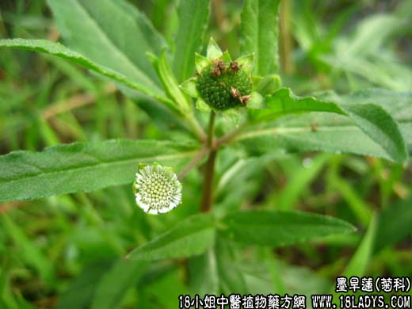

【中药概述】
墨旱莲为菊科草本植物鳢肠的地上部分。甘、酸，寒。归肝、肾经。
1．补益肝肾：用于肝肾阴虚的齿牙松动、须发早白、眩晕耳鸣、腰膝酸软等，常与女贞子，桑椹配伍，如（<证治准绳>二至丸）。
2．凉血止血：用于阴虚血热的吐血、衄血、尿血、便血、崩漏下血，及外伤出血等，可与生地黄，侧柏叶，大蓟等配伍。如（<沈氏尊生>二草丹：旱莲草 车前草）。
【药效鉴别】
旱莲草与女贞子功能相近，配伍能增强补益肝肾之功。旱莲草偏于凉血止血，滋阴作用较弱。旱莲草不仅可用于血热出血，也可治疗心脾两亏脾不统血之尿血，用旱莲草加归脾汤，
可增强止血功能。
【药理作用】
1.对动物创伤出血有较好的止血作用；
2.能升高外周白细胞，提高淋巴细胞转化率。
【化学成分】
含维生素A类物质、挥发油、鞣质、苦味质及旱莲草素。
【用量用法】
10——25g，水煎服。